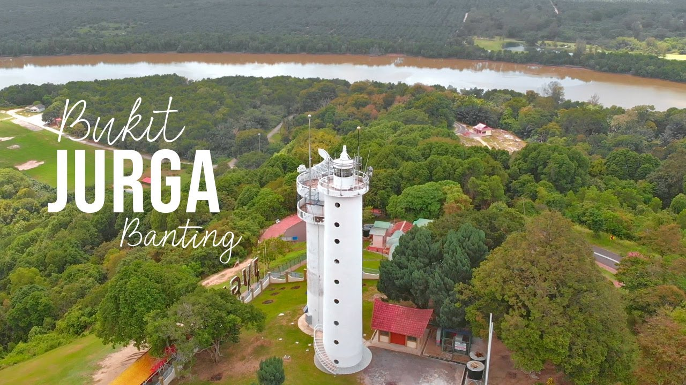
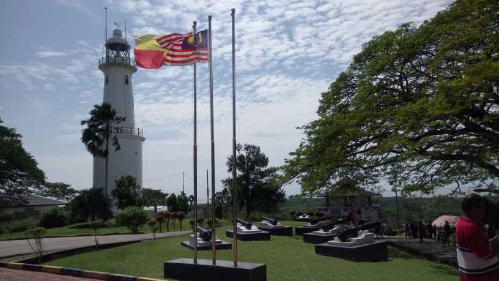

HISTORY
HISTORY OF BUKIT JUGRA
SHORT HISTORY
When Sultan Abdul Samad, the then-ruling monarch of Selangor, erected Istana Jugra (Jugra Palace) and relocated there in 1875, Jugra was the royal capital of the state. It was in a strategic site, not quite at the river mouth but easily accessible from the Malacca Straits, and was guarded by a hill, Bukit Jugra, which rises above the low-lying mangrove swamps. It has been a familiar landmark for Malacca Straits navigators for decades. Bukit Jugra was charted by Chinese, Arab, and European mariners; it was also known to many foreign navigators as Parcelar Hill, derived from the Arabic term for it, balasar.
During this time, Jugra also temporarily served as the seat of British administration in Selangor, before being relocated to Klang and then to Kuala Lumpur a decade later. The Sultan remained in Jugra until his death in 1898, when he was succeeded by Sultan Alauddin Sulaiman Shah, also known as Sultan Sulaiman. This was Jugra's last significant event. In1905, Sultan Alauddin Sulaiman relocated his official house to the Istana Alam Shah in Klang, which he occupied for the following 35 years. Jugra soon devolved into a backwater after that, with even the Kuala Langat constituency's administration being shifted to Banting.
LEGEND OF BUKIT JUGRA
Bukit Jugra, like many other sites in Malaysia, is rife with legends. The final marriage of Puteri Gunung Ledang to Nakhoda Ragam after Melaka's Sultan Mahmud Shah failed in his attempt to gain her hand is a popular one. According to legend, Nakhoda Ragam had a propensity of tickling his wife's ribs, which the princess despised.
The princess stabbed her husband in the chest with a needle while they were on a boat off the coast of Kuala Langat one day in an insane fit of rage. She washed his body up on the beach and buried it at the base of Bukit Jugra. The two cats who accompanied the couple became "ghost tigers" to protect the cemetery. Soon after, the princess returned to Gunung Ledang and determined to never look at another man again.
HISTORY COMES TO LIGHT
Sultan Alaeddin erected Istana Bandar with his own money when his grandfather, Sultan Abdul Samad ibni Al-Marhum Raja Abdullah, died in 1898 and he became the ruler of Selangor. Construction on the five-hectare plot of land began a year later, and the royal family moved in in 1905, until Sultan Alaeddin's death 33 years later.
Raja Suleiman Shah, as Sultan Alaeddin was then known, shared a deep interest in agriculture with his grandpa in the years preceding up to Sultan Abdul Samad's death. Raja Suleiman inherited more than 1,000 acres (404 hectares) of land after his father, Raja Muda Musa, died in 1884.
Planting sugar cane, coconut, areca, and padi, the Sultan and his heir apparent amassed a fortune. They then utilised $3,000 from their personal funds to assist local landowners in establishing their own plantations. By 1894, the majority of the area around Jugra had been planted with fruit trees, coffee plants, and padi fields.
Sultan Alaeddin was a God-fearing man who contributed greatly to the promotion of the Islamic faith in Kuala Langat throughout his reign. In 1905, he erected the neighbouring Masjid Alaeddin for the benefit of his people, and he was frequently seen there preaching and leading Friday prayers. The mosque design, also known as Masjid Bandar, is thought to have originated in the Kingdom of Deli in Medan, Sumatra.
Sultan Aleddin's third son and successor, Sultan Hisamuddin Alam Shah Ibni Al-Marhum Sultan Alaeddin Sulaiman Shah, transferred his seat of authority from Jugra to Klang, and Istana Bandar fell into neglect.